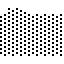

Home/

Poetry/
Projects/

info.txt
blog.txt
The PATH Operating System is a custom operating system that's modeled after what I consider to be the ideal of software design. From a user's standpoint, it's modeled heavily after the original Macintosh System Software and NeXT's OPENSTEP. From a programmer's standpoint, it's designed to be as simple to develop with as possible, while still being possible to have a more advanced development process.
The system is not meant to explicitly avoid any design principles (i.e, I'm not purposefully avoiding a UNIX-like, DOS-like, or NT-like design) but is also not meant to stick to any design (i.e, I might implement only some parts of POSIX).
Currently, the system is not in any usable stage. I'm still working on very basic functionality. I'm basing my code off of a variety of open-source projects in order to maximize the quality of code (See the concept of NIH to understand why I choose to enjoy the luxury of PFE).
Credits and thanks to the OSDev wiki and forums, BRUTAL, CuriOS, Xv6, and the Limine bootloader.
Milestone: 0, Booted
Next Up: 1, Basic Hardware Interraction